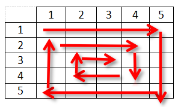
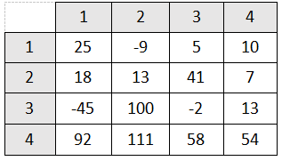

Pe lângă parcurgerea obişnuită, există şi parcurgerea elementelor matricei în spirală, în sensul acelor de ceasornic, antitrigonometric.
Parcurgerea se realizează astfel:
De exemplu, pentru matricea
parcurgerea în spirală va fi 25, -9, 5, 10, 7, 13, 54, 58, 111, 92, -45, 18, 13, 41, -2, 100.
Algoritmul presupune parcurgerea fiecărei linii, respectiv coloane, în spirală, ţinându-se seama de elementele deja parcurse şi afişate. În cazul în care matricea are un număr impar de linii şi de coloane, testul de la finalul programului va afişa şi elementul din centrul matricei, întrucât acesta nu este parcurs.